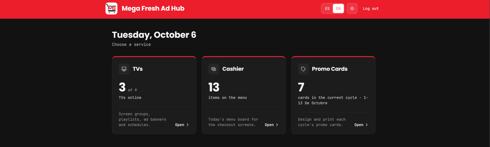
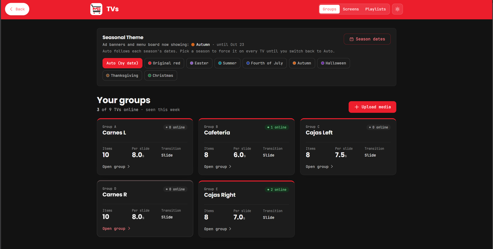
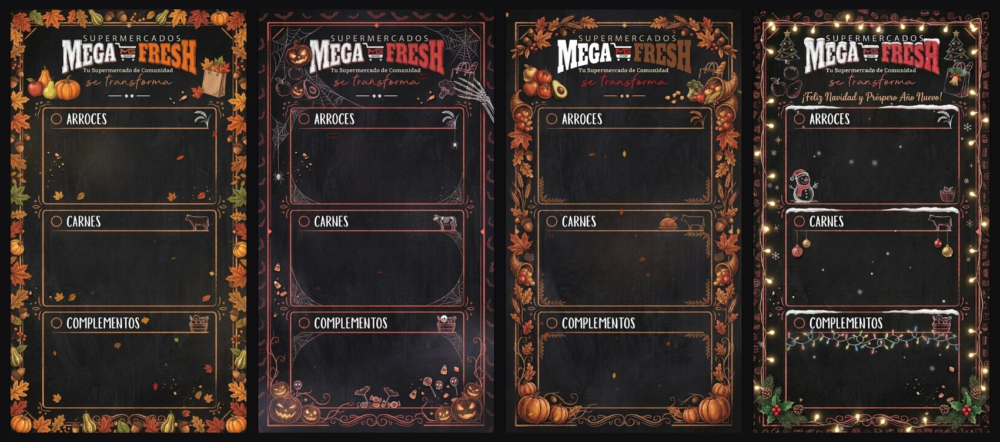
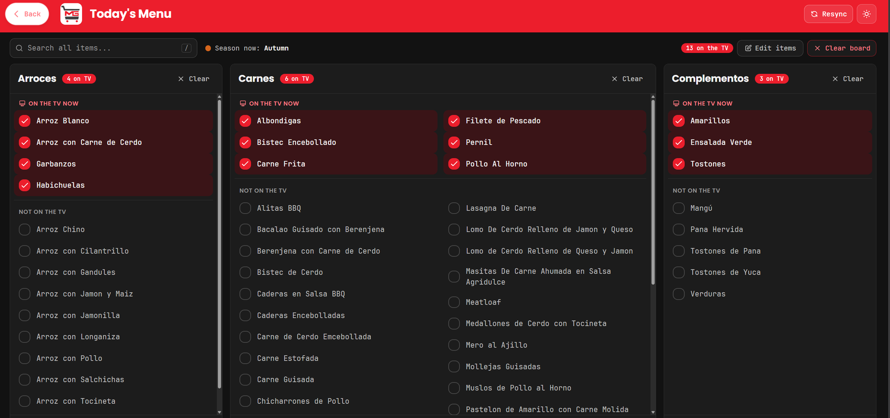
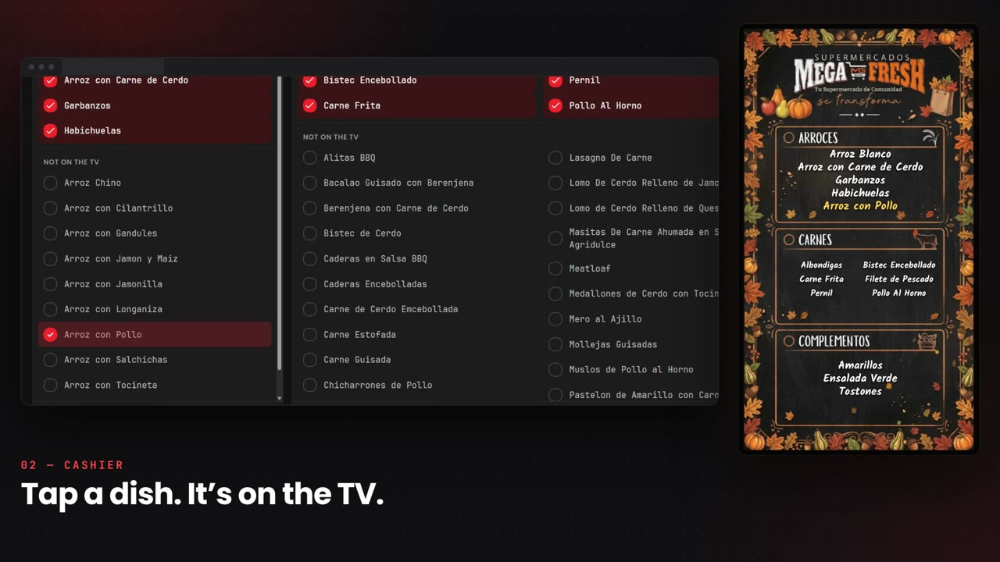
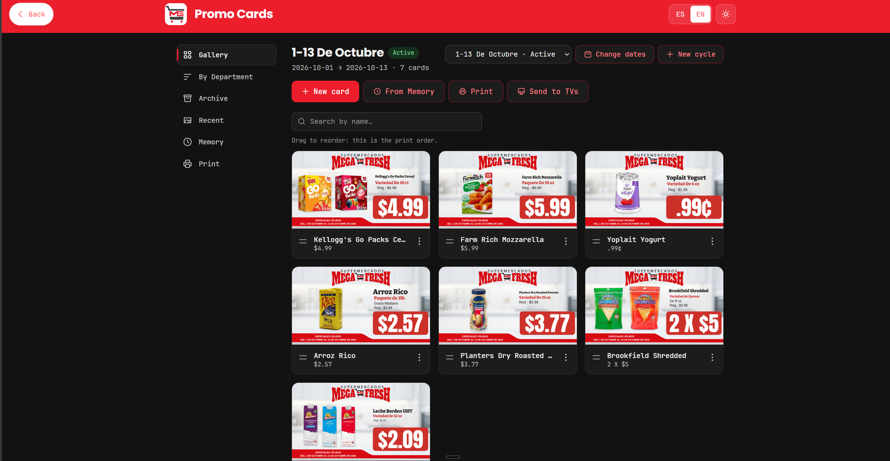
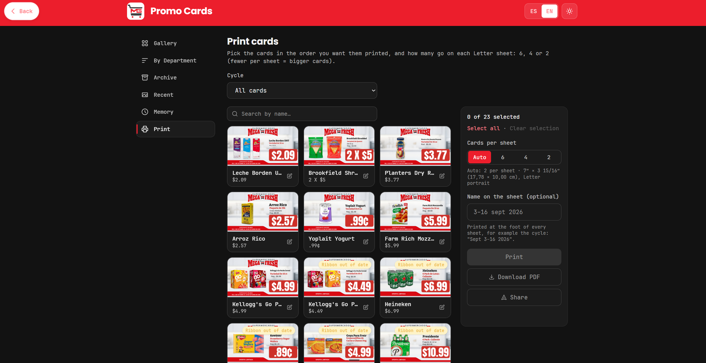

Mega Fresh Ad Hub is the web app behind the TVs at Supermercados Mega Fresh and El Mejor Supermarket. Staff sign in once and manage the ads on the screens, the hot-food menu boards and the printed promo cards from the same place.
After signing in, staff land on a single menu that shows what is live right now: how many TVs are online, how many dishes are on the board, and how many cards are in the current sale.


Ad banners and menu boards follow the calendar. Autumn, Halloween, Thanksgiving and Christmas each bring their own animated board, and any season can be forced onto every TV with one click.





These are the ads running in the stores today, shown the way the TVs play them.